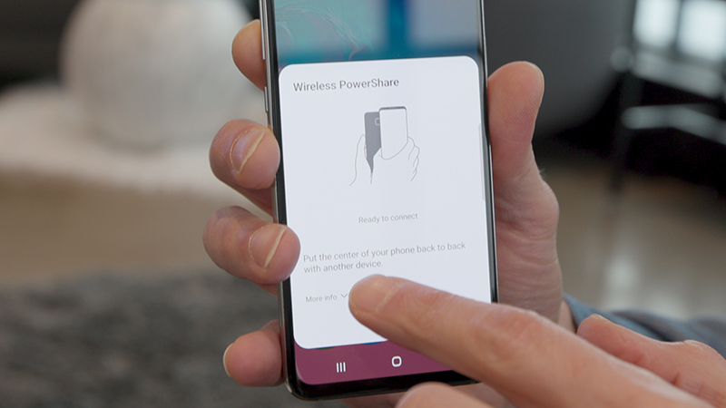
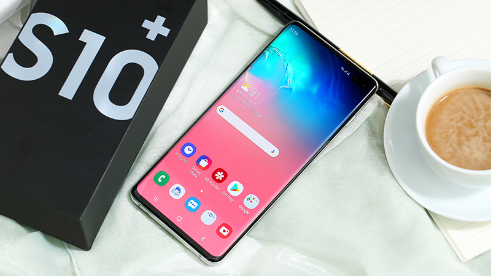
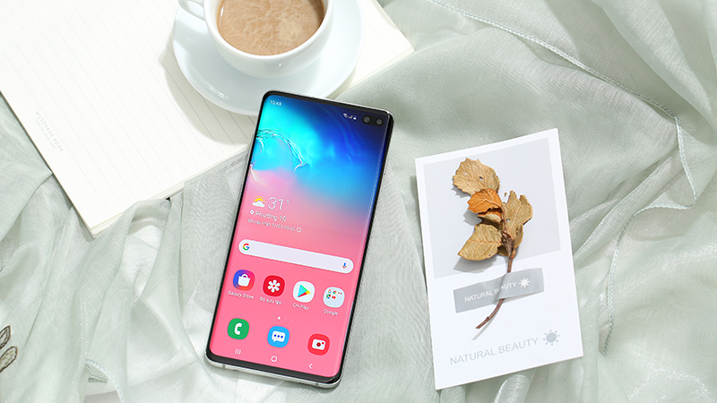
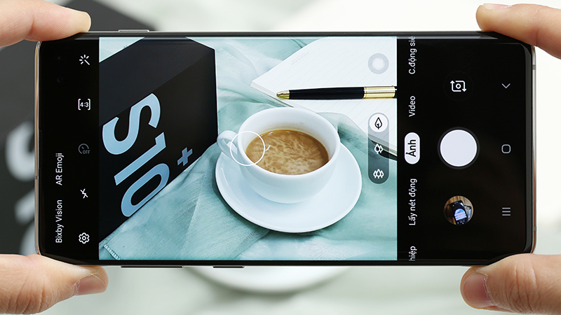
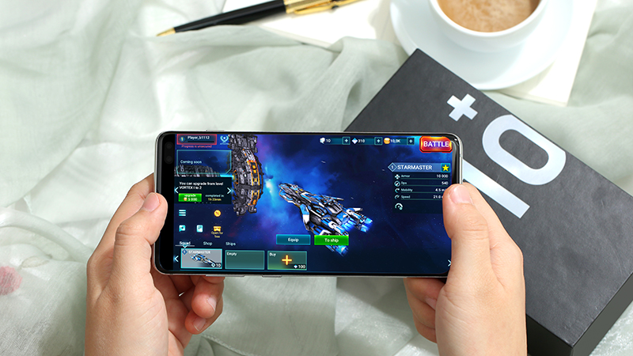
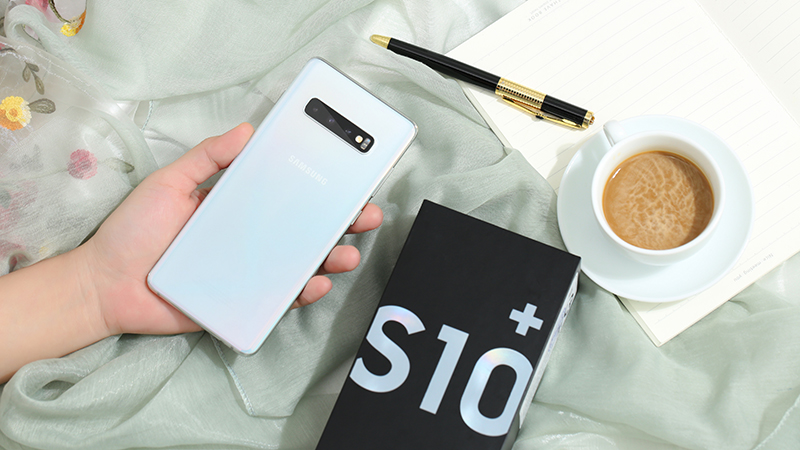
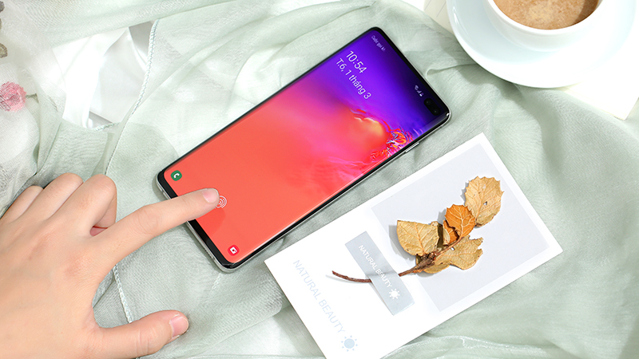
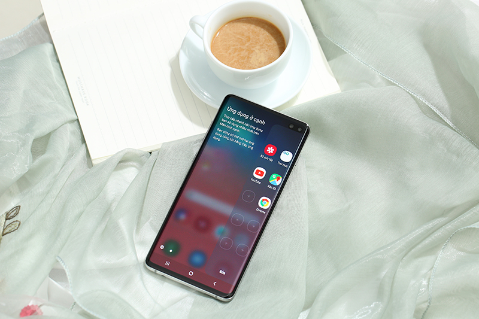

Samsung Galaxy S10+ (512GB) đi theo kiểu thiết kế màn hình Infinity-O với phần camera được đặt phía trong màn hình rất độc đáo
Kiểu thiết kế mới này mang lại phần viền màn hình mỏng ở tất cả các cạnh, từ đó khiến tổng thể máy không quá lớn so với kích thước màn hình.
Màn hình của máy có kích thước 6.4 inch cùng độ phân giải khủng 2K+ cho bạn thưởng thức những bộ phim hay xem những hình ảnh sắc nét.
Công nghệ HDR10+ tiên tiến nhất hiện nay cho bạn một trải nghiệm hình ảnh thực sự khác biệt so với phần còn lại của thế giới smartphone.
Những chiếc Galaxy S tới từ Samsung luôn được người dùng đánh giá cao về camera và với Samsung Galaxy S10+ (512GB) cũng không phải là một ngoại lệ.
Máy sở hữu 3 camera với các thông số lần lượt là: ống kính chính góc rộng (77 độ) 12 MP (khẩu độ f/1.5), ống kính phụ tele 12 MP (khẩu độ f/2.4) và ống kính phụ góc siêu rộng (123 độ, f/2.2) 16 MP.
Trang công nghệ DxOMark - trang chuyên đánh giá về camera cũng đã đưa ra nhận xét về Galaxy S10+ là một trong những chiếc máy có camera tốt nhất trên thị trường nhờ khả năng chụp siêu rộng cũng như hình ảnh sắc nét, màu sắc rực rỡ.
Camera trước của máy cũng là cụm camera kép với chiếc ống kính chính 10 MP và ống kính phụ 8 MP hỗ trợ chụp ảnh chân dung và quay phim với độ phân giải 4K.
Con chip Exynos 9820 kết hợp với 8 GB RAM đủ sức cho bạn có thể sử dụng tất cả game và ứng dụng nặng nhất hiện nay một cách mượt mà, bất kể là Liên Quân Mobile, Free Fire hay PUBG.
Bên cạnh đó thì với 512 GB bộ nhớ trong thì bạn sẽ có một không gian "cực kỳ thoải mái" để tải ứng dụng hay lưu trữ dữ liệu cá nhân.
<Trên Samsung Galaxy S10+ còn có một tính năng mới được rất nhiều người yêu thích đó chính là khả năng sạc ngược không dây cho smartphone khác (PowerShare).
Điều này có thể giúp bạn biến chiếc smartphone của mình thành một cục sạc không dây di động trong những trường hợp khẩn cấp.
Ngoài ra tiêu chuẩn kháng nước và bụi bẩn IP68 cao cấp nhất hiện nay vẫn xuất hiện trên máy đảm bảo bạn có thể sử dụng dưới các điều kiện khắc nghiệt mà máy không gặp vấn đề gì.
Vân tay siêu âm hiện đại và tiên tiến cũng là 1 tính năng hấp dẫn trên S10+ giúp mở khoá máy nhanh chóng và đẳng cấp.